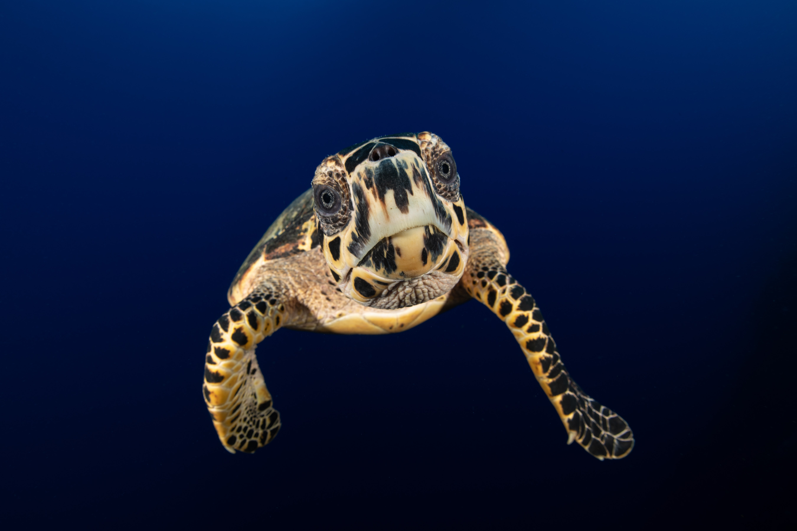

CATEGORIES
Green sea turtle

These turtles with their brown, black, or dark green colored shells are the most common sea turtle species in Sri Lanka. The fat underneath the hard shell is often greenish, giving the marine animal its name. At up to 120 cm tall, the green turtle competes with the loggerhead turtle for second-largest sea turtle species. While young turtles feed on worms, jellyfish, and sponges, the adults turn vegetarian feeding on seagrasses, seaweeds, and algae.
Due to their diet, green sea turtles can mostly be found near the coast, where the water is shallow and the vegetation plenty. When females breed, they come ashore at night to lay up to 200 eggs. Before vanishing into the ocean and leaving behind their offspring, they cover the nest with sand to protect it from predators. The nest temperature determines whether the baby turtles that hatch 60 days later are females or males.
Since the adults are very large and well-armored, their only predators are large sharks and humans. Due to egg collection, illegal hunting, loss of nesting sites, and fishery bycatches, this species is classified as endangered. Green turtles have been reported nesting on Sri Lanka's southern shores throughout the year with their peak season being January through March. The places with the highest abundance of this species are Kosgoda and Rekawa Beach.
hawksbill sea turtle
These sea turtles are small to medium-sized with a curved, pointed beak that resembles one of a hawk. They can be easily distinguished from their relatives due to their colorful and irregularly patterned shell. Hawksbills are highly migratory and can be found in tropical and subtropical regions of the Atlantic, Indian and Pacific Ocean.
As omnivores, these turtles eat everything from algae to sea urchins. However, preferred meals consist of sponges that are unpalatable or toxic to other marine dwellers. Despite its protective shell, large fish, sharks, crocodiles, and octopuses hunt this species. Just like other turtle hatchlings, the little ones are vulnerable to wild dogs, birds, and shore crabs.
While it is difficult to calculate an exact population size, the hawksbill population is believed to have decreased by over 80% over the last century.That's why it is listed as critically endangered. In Sri Lanka, the hawksbills are rarer than green turtles but can be seen nesting in Kosgoda or Bundala in the country's South.
Loggerhead turtle

These large marine reptiles can be recognized by their big heads and reddish brown carapace. While hatchlings live on algae mats floating in warm currents, juveniles can be spotted in coastal waters. Since loggerheads are cold-blooded and need to avoid water temperatures below 13°C, they migrate to warmer waters during the winter months.
Loggerheads come to the surface to breathe every 15 to 30 minutes, but can also dive up to 7 hours without catching a breath. This turtle species eats everything from algae to jellyfish to their own hatchlings. Predators include sharks, killer whales, and seals.
Loggerhead sea turtles are classified as vulnerable. In Sri Lanka, loggerheads are very rare but have been discovered on the beaches in Kosgoda, Rekawa, and Bundala.
Olive ridely turtle

Olive ridley turtles are the smallest sea turtle species. Their shell or carapace is heart-shaped and has an olive green color. Feeding on crabs, shrimp, and jellyfish, these reptiles can be encountered in warm waters around the world, specifically in the Indian and Pacific Ocean.
This species is famous for so-called „arribadas“ where thousands of turtles come together to nest at the same time. In Sri Lanka, olive ridley turtles nest on many different beaches, including Kosgoda, Yala, and other scattered locations between September and November. It is estimated that there are around 800,000 olive ridley turtles alive today, which is why this species is only listed as vulnerable.
Leatherback sea turtle

These giants can grow way over 160 cm and weigh over 700 kg. Compared to the green turtle, this species has a softer, more flexible shell that resembles a leather-like texture. Due to their thick layer of insulating fat, these marine animals can survive in colder waters and dive to depths of up to 1000 m.
With jellyfish as their favorite food, these giants are quite vulnerable to floating plastic trash in our oceans. Experts rate this turtle species as vulnerable. Leatherbacks have been sighted on rare occasions on Sri Lankan shores around Kosgoda, Mawolla, or Rekawa beach.
Summary about turtle species in Sri Lanka
| name | size | Where we can find | how to identify |
|---|---|---|---|
| Green sea turtle | 3 to 4 feet long and eighs 300 to 350 pounds | Kosgoda, Rekawa | Their shells have five scutes running down the middle and four scutes on each side. |
| Hawksbill sea turtle | 2 to 3 feet in shell length and can weigh between 100 and 150 pounds at maturity. | Kosgoda, Bundala | mottled shells consisting of an irregular combination of shades of amber, orange, red, yellow, black and brown. |
| Loggerhead sea turtle | carapace length of 75- 112 cm (29.3-43.7 in) and weighs 77-159 kg (170-351 lb). | Kosgoda, Rekawa, Bundala | The loggerhead turtle has a wide, blocklike head, and four prefrontal scales (two pairs) between its eyes. |
| Olive ridely turtle | 2 to 2.5 feet (0.6 to 0.7 meters) in length and weighing 80 to 110 pounds (36 to 49 kilograms). | Yala, Kosgoda | Olive ridley turtles are an olive/grayish-green with a heart-shaped carapace (top shell) having 5 to 9 pairs scutes. Each of the four flippers of an olive ridley has one or two claws. |
| Leatherback sea turtle | more than 6.5 feet (two meters) in length and weighing up to 2,000 pounds (900 kilograms) | Kosgoda, Mawolla, Rekawa | black with blue, pink, and white splotches throughout the body. |